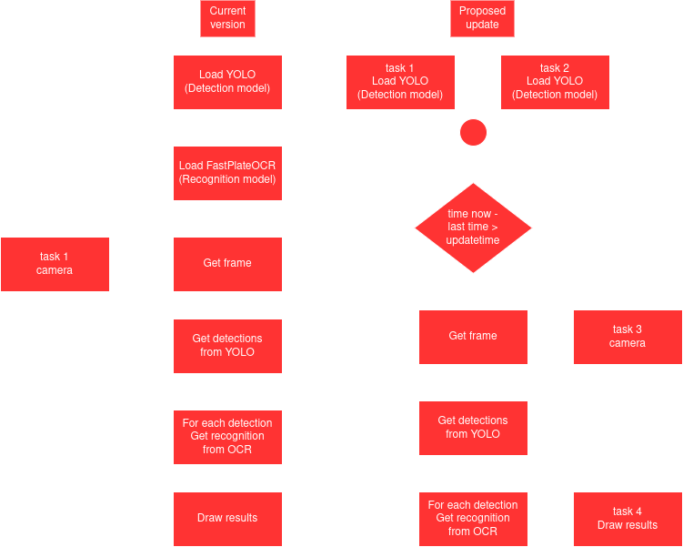

What would I redesign in my ALPR?
Inference performance.
In my last update of ALPR GUI performance was very slow. Why?, because there was not any information about if it needs or does not need to keep running plate detection and recognition, so that, if for example, the video is 30 FPS then both task are executed in all the 30 frames. Instead, I would give a time of relax when I suppose the car is still in front of the camera. That way inference is performed just in few key frames.
On the other hand, the program is totally sequential. I didn't know much about threats at the time. Now, instead I would separate some task in threats for faster code execution. I think these task could be perfectly executed in parallel: models loading for detection and recognition, consulting if recognition already was registered in database and drawing results (region of detection and recognized license plate) in frame.

Training data.
I used synthetic data for training models and that is fine. But synthetic data generation method I tried was way time consuming. Now I would try to use existing AI generative models to crop chars and align and clean license templates from real images so that I may have better templates to use in the program to create randomized synthetic data. Of course these AI models could also help me to introduce variants to create larger and diverse dataset.